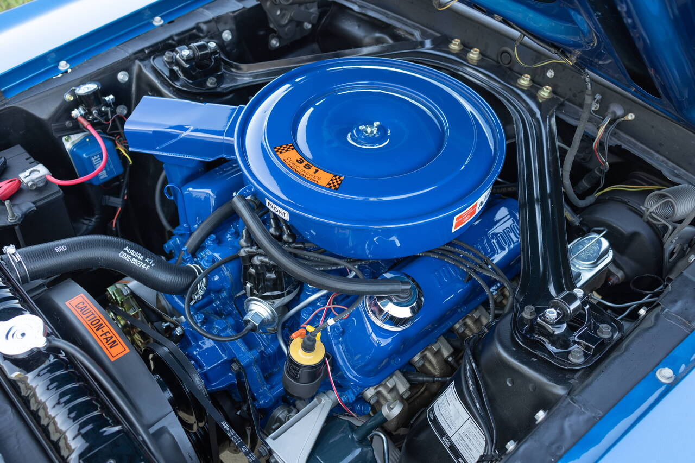
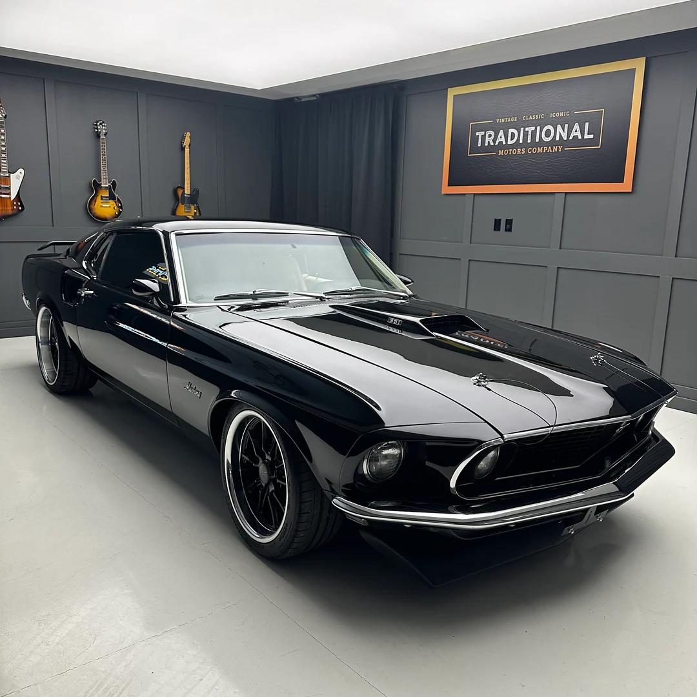
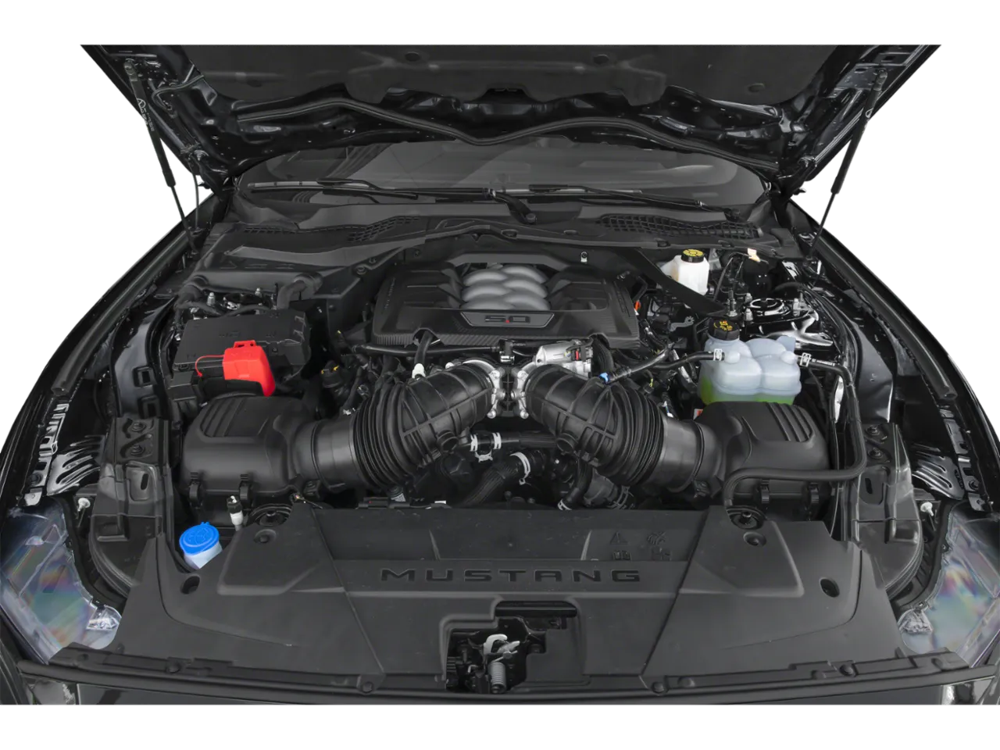
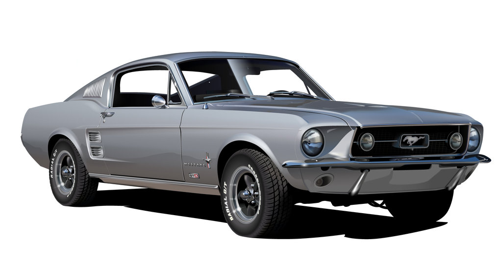
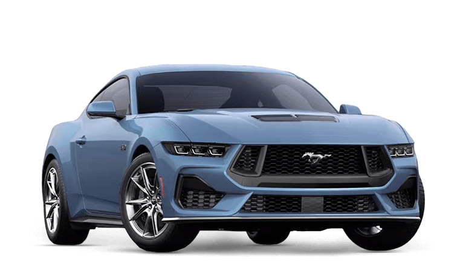
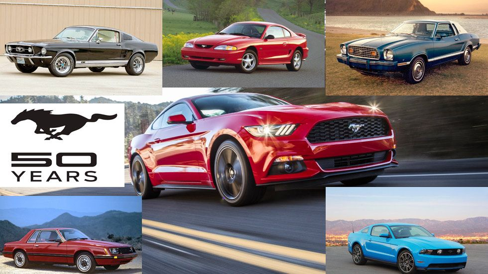

Bajo su capó rugía un V8 de 390 pulgadas cúbicas con 320 caballos de fuerza. Una bestia de acero que dominaba cada recta y hacía temblar el asfalto con solo girar la llave.

1967: El Despertar de la Bestia
El modelo de 1967 marca el punto de inflexión donde el Mustang reclamó su trono en la carretera. Con una carrocería más ancha, una parrilla más agresiva y una caída fastback que se convirtió en un icono instantáneo, este año no solo trajo un diseño renovado, sino la capacidad de albergar los masivos motores Big Block V8. Fue el año en que el estilo se encontró con la potencia bruta, dando vida a leyendas como el Shelby GT500. El Mustang del 67 no se diseñó para pasar desapercibido; se creó para dominar el asfalto con un rugido que aún hoy, décadas después, sigue siendo el estándar de oro de la libertad americana.

El Mustang actual redefine su corazón con el motor V8 de 5.0 litros más avanzado hasta la fecha. La innovación clave es su sistema de doble admisión de aire con dos cuerpos de mariposa, que permite al motor "respirar" con una eficiencia masiva. Esta arquitectura elimina restricciones, entregando una respuesta inmediata y el mayor caballaje de serie en la historia del modelo.
.png)
Ford Mustang S650.
El nuevo Ford Mustang no es un medio de transporte; es un manifiesto de libertad. En un mundo que se vuelve silencioso y predecible, el rugido de su V8 Coyote es un recordatorio de que la pasión verdadera no tiene filtros. Cada vez que aprietas el botón de encendido, no solo despiertas a una bestia de ingeniería, despiertas un legado de seis décadas que ahora está bajo tu control. Diseñado para quienes no se conforman con lo ordinario, el Mustang te ofrece la máxima expresión de potencia americana con la sofisticación tecnológica del mañana. No esperes a que alguien más te cuente qué se siente dominar el asfalto. El asiento del conductor te está esperando. Toma las riendas. Sé la leyenda.



Del Acero al Algoritmo: La Metamorfosis del Mito
El Ford Mustang no ha envejecido; ha evolucionado. Lo que comenzó en 1964 como un rebelde de hierro y carburación, se ha transformado en una obra maestra de ingeniería predictiva. A lo largo de siete generaciones, el Mustang ha sabido heredar el ADN de su rugido original para inyectarlo en una arquitectura moderna de fibra de carbono y software de alto rendimiento.